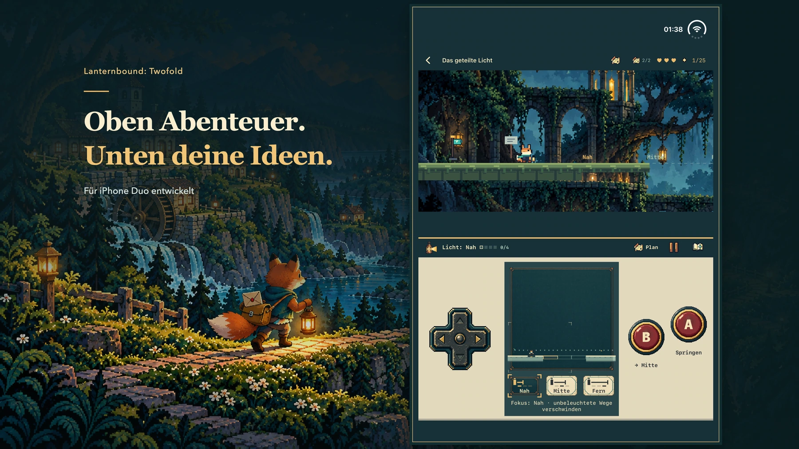

Ein Abenteuer für iPhone Duo
Zwei Bildschirme. Zwölf Wege nach Hause.
Trage zwölf Briefe durch ein vergessenes Tal. Deine Laterne zeigt den Weg – und die Menschen, die an seinem Ende warten.
Spielprinzip ansehen
Werbeillustration; echte Spielszenen folgen weiter unten.
Jeder Brief öffnet einen Weg.
Ein Sturm zerstörte die Wege. Auf der neuen Karte fehlen manche Häuser. Als junger Fuchskurier verbindest du Nachbarn und trägst einen persönlichen Brief zu deinem Mentor, der nicht mehr antwortet. Eine Zustellung führt zur nächsten. Liefere alle zwölf Hauptbriefe aus, erlebe den vollständigen Abschluss und kehre zurück, um die Veränderungen zu sehen.

iPhone Duo
Oben das Abenteuer. Unten dein nächster Zug.
Oben liegt die Welt, unten findest du Karte, Instrumente und vertraute Tasten. Richte das innere Display so aus, dass die Welt über der Steuerung liegt. Unterstützte flache Anordnungen behalten diese Aufteilung bei.
- Mit dem Steuerkreuz bewegen, mit A springen, mit B das aktuelle Instrument benutzen.
- Öffne den Plan, um das Spiel anzuhalten und die Route zu prüfen. Kehre danach ins Spiel zurück.
- Bereite unten einen Mechanismus vor und springe oben weiter. Deine Planung verändert den erreichbaren Weg.
Nimm auch den unscheinbaren Weg.
Folge Mottenzeichen in dunkle Gänge. Klettere zu höheren Wegen, steige in Tunnel hinab und finde verborgene Räume. In jedem Kapitel warten zwei optionale Andenken mit eigenen kleinen Geschichten.


Eines lernen. Zwei zusammendenken.
Licht enthüllt einen Weg, der Bumerang läutet eine Glocke. Halte eine Plattform an, drehe einen Spiegel oder lasse ein Echo auf einem Schalter stehen. Jedes Kapitel nutzt sein Instrument in vier Hauptaufgaben und verbindet zwei festgelegte Werkzeuge in aufeinanderfolgenden Rätselschritten. Manche Nebenwege ändern die Reihenfolge.


In Vorbereitung · Noch nicht eingereicht oder erhältlich
Ein ganzes Abenteuer. Einmal kaufen.
Als kostenpflichtige Duo-Exklusivausgabe geplant. Ein Kauf umfasst alle zwölf Kapitel, ohne Werbung, Abos oder In-App-Käufe. Geplanter US-Preis: 9,99 US-Dollar. Endgültige regionale Preise und Verfügbarkeit stehen später auf der offiziellen App-Store-Seite.